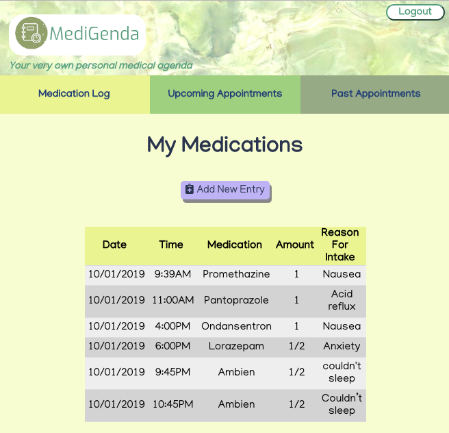
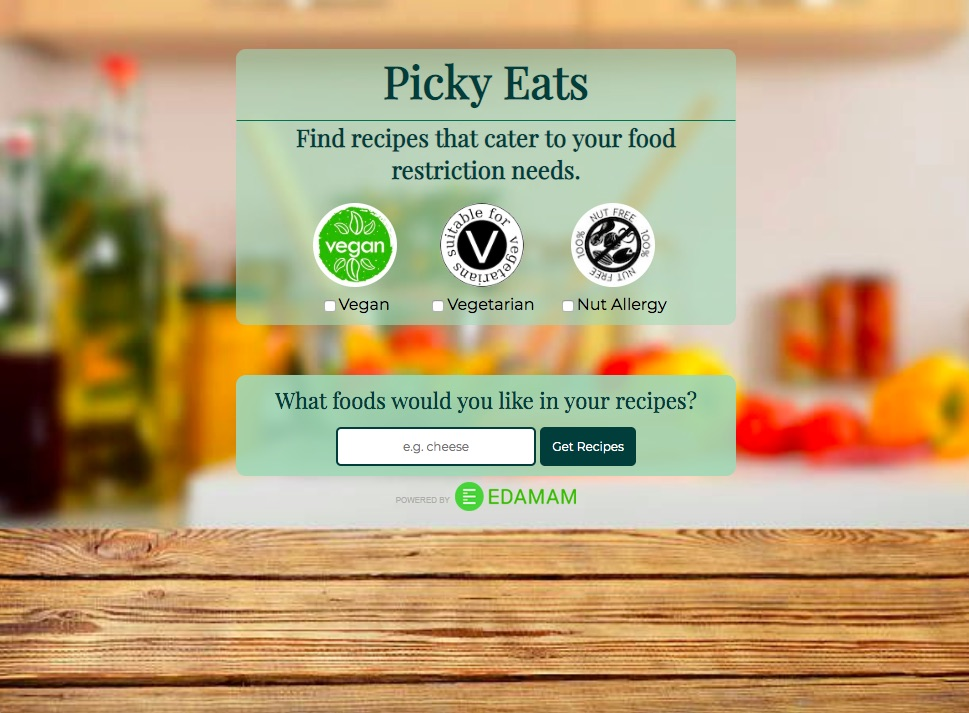

Hi, I'm Tarin.

Front-End Developer in Phoenix, Arizona.
Take a peek at my creations!
Inspired by mother who is battling breast cancer, MediGenda was created for anyone with a medical condition or disease that requires them to keep track of numerous, frequent appointments as well as medicinal intake. MediGenda was developed with the intent to track and log all upcoming and past appointments, billing information, and medicinal intake. Instead of constantly keeping track of tangible medical records, MediGenda makes it so that you can log and file everything in one place at anytime.
|
Costless Creatives makes it safe to network without having to address the uncomfortable subject of money. Costless Creatives allows you to post about any kind of projects you're looking to create or be a part of. Whether you're simply new to the field of entertainment and looking to network, if you're looking for people to be a part of a passion project you'd like to create, or if you're simply just looking to create and exchange content for exposure. We're just passionate artists looking to connect!
| Picky Eats is an app that displays recipes for users that may or may not be vegan, vegetarian, or have nut allergies.
|
The Office Quiz app is an interactive app built using JavaScript that tests your knowledge of the hit TV series "The Office.”
|